Keywords: futuristic lifestyle, minimal surface
[Group Work] with Wenrong Zou
[Tutor] Qiuyu Chen
[Location] Hongkou Metro Station, Shanghai, China
[Time] August, 2019
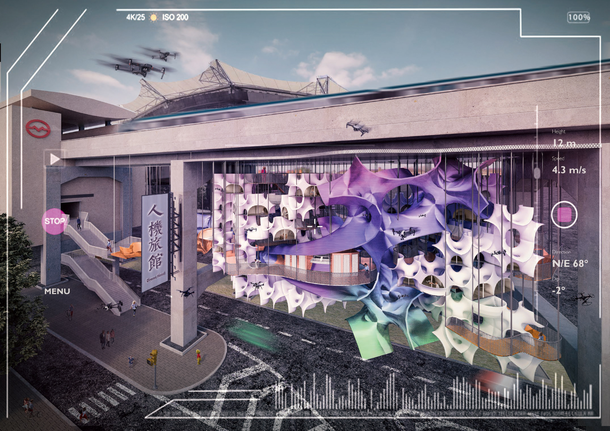
+Description
By recent years, the technology of personal drones has made significant progress, and the usage of such devices has developed beyond mere aerial photography. Meanwhile, modern people get more and more addicted to the screen on their hands, which could also be the remote control for flying drones, so we venture to guess that the individual drone will be able to undertake most of human’s daily activities in the future.
We select a length of empty spaces beneath a viaduct in Shanghai as the site for our experimental ‘Drone Hotel’, which intends to create a new layer of drone in the low-altitude sky. In such a heterogeneously coexsiting context, the lodgers can interact with the surroundings through their own drones, such as buying things, sightseeing the park and watching a football game. Thus, a kind of new lifestyle is performed in the air before future comes.
+Trend of Homebody
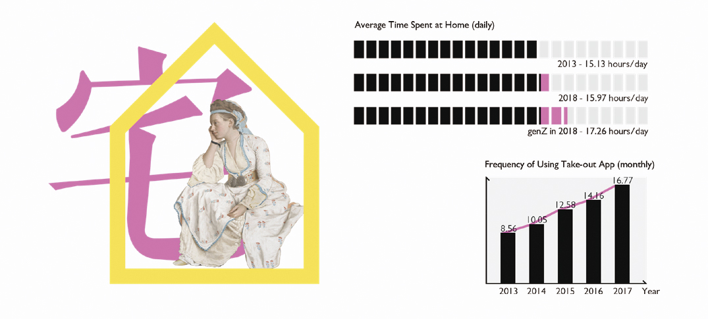
More and more people prefer to stay indoors, especially the genZ(15- 19 year-old adolescents), which can be reflected from the freqency of ordering takeout food.
+Development of Drones
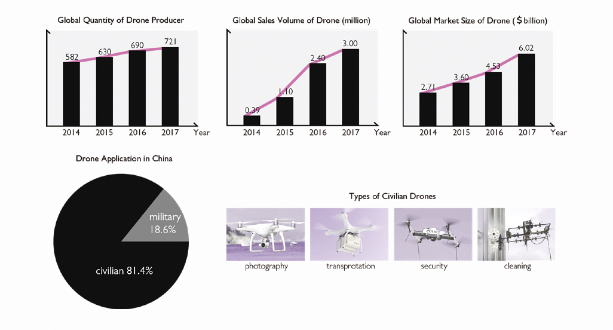
By the last five years, the market of drones had developed significantly. In the meantime, different types of civlian drones were invented to fulfill the diverse demands from people, such as photography and transportation.
+Evolution of Lifestyle
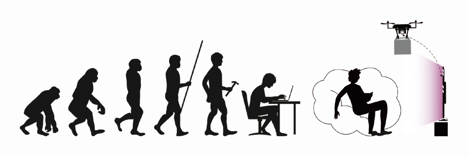
As the development of eletronic devices, the gesture of human beings started to degenerate. People huddle themselves in front of a screen and get everything they want without going outdoors.
+Site
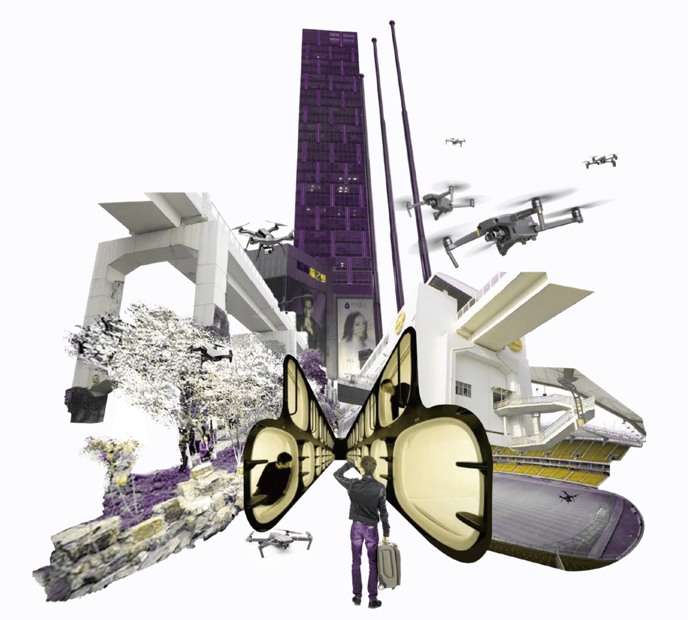
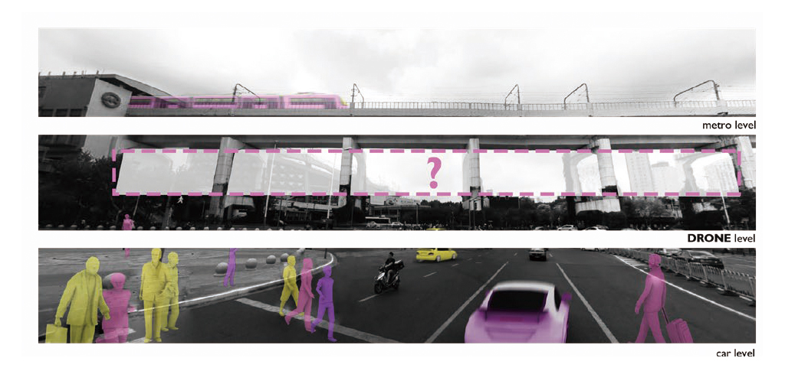
Our site is located near the metro station of Hongkou stadium, with diverse facilities around, such as football stadium, park and shopping mall. We hope to create a new level of drone just under the viaduct, encouraging people to use drones to connnect with the surroundings in the air. Thus, an experimental capsule hotel is hanged under the huge structure to simulate a mutual nest of human and drone.
+Activities
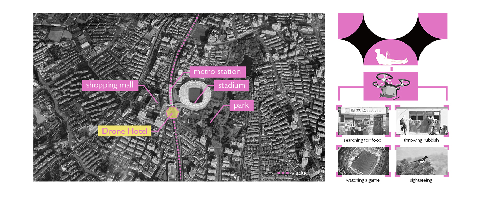
We hope people to experience a new lifestyle in our Drone Hotel. Several capsules with the simplest things that a modern needs are provided, and the lodger can accomplish the basic and recreational activities in our normal life by operating a drone, such as buying food from a shop, watching a football game in the air above and sightseeing in the park.
+Prototype
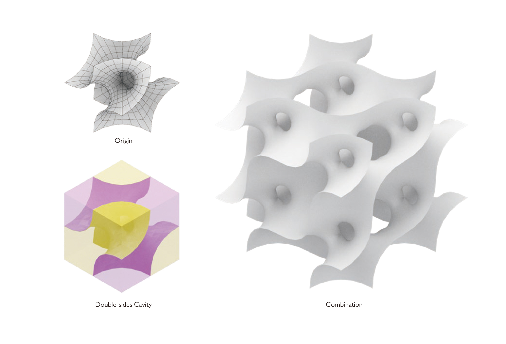
We try to generate a minimal surface in a cube volume as our prototype, which has two seperated but connected cavities, respectively serving for humans and drones. Also, this prototype can be expanded infinitely and becomes a collective space.
+Symbiotic Cavities
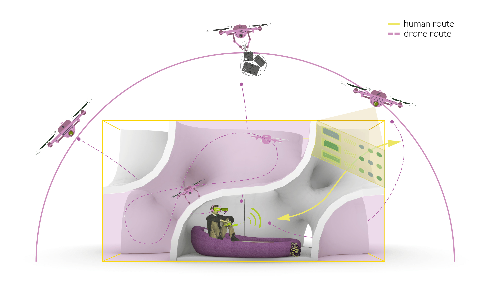
Our prototype enables people and drones to keep a parallel but interconnected relation in the hotel. People live in the residentialside cavity, while drones can fly through the vacancy on the other side. Moreover, The acitivities of people and drones will intersect at some open holes, where the postive track converts to the negative track. Therefore, the drones can turn into the extension of human body in such a experimental living nest.
+Differentiation
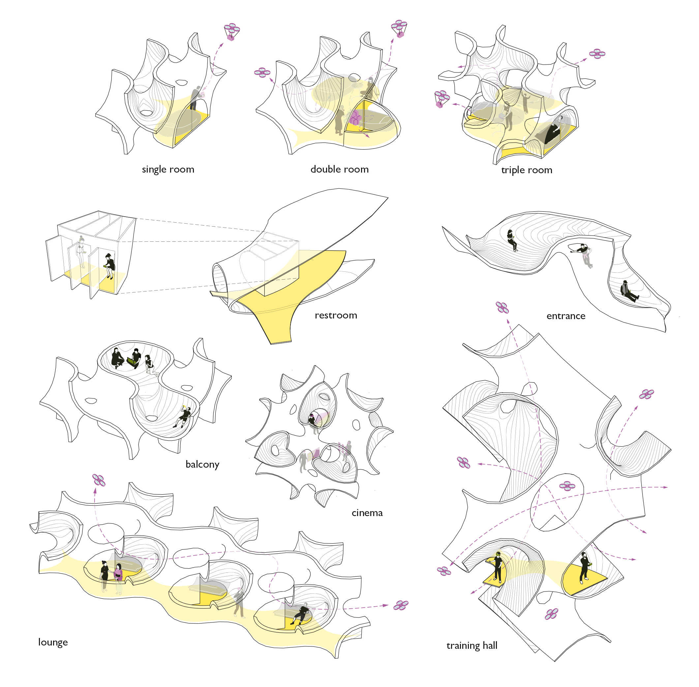
By repeating and deforming the basic unit, spaces of different functions are created for people to explore the brand new lifestyle.
+Combination
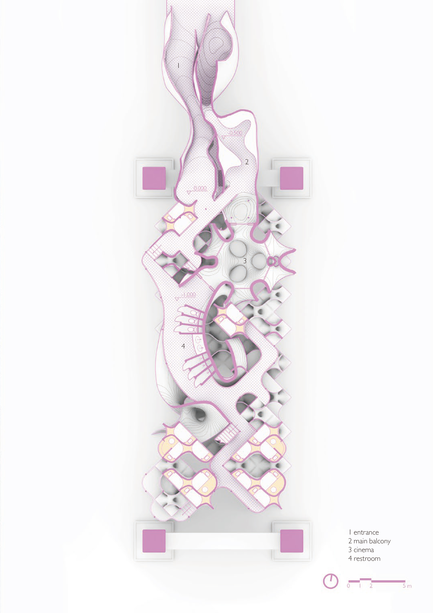
The residential units are attached to the huge volume of public spaces, which includes balcony, cinema, restroom and so on.
+Living Scenes
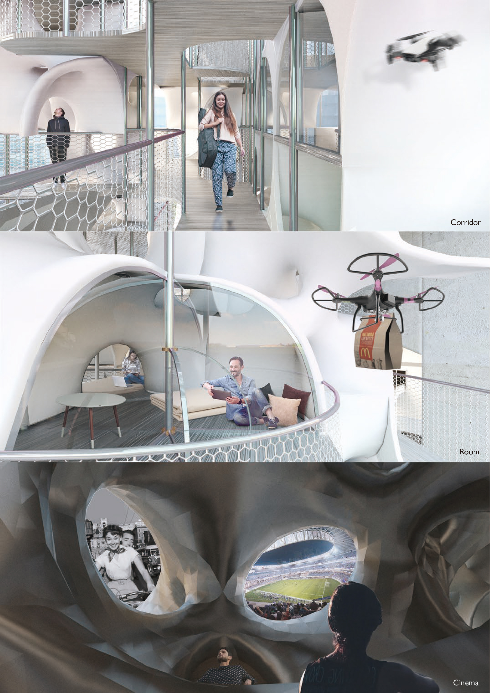